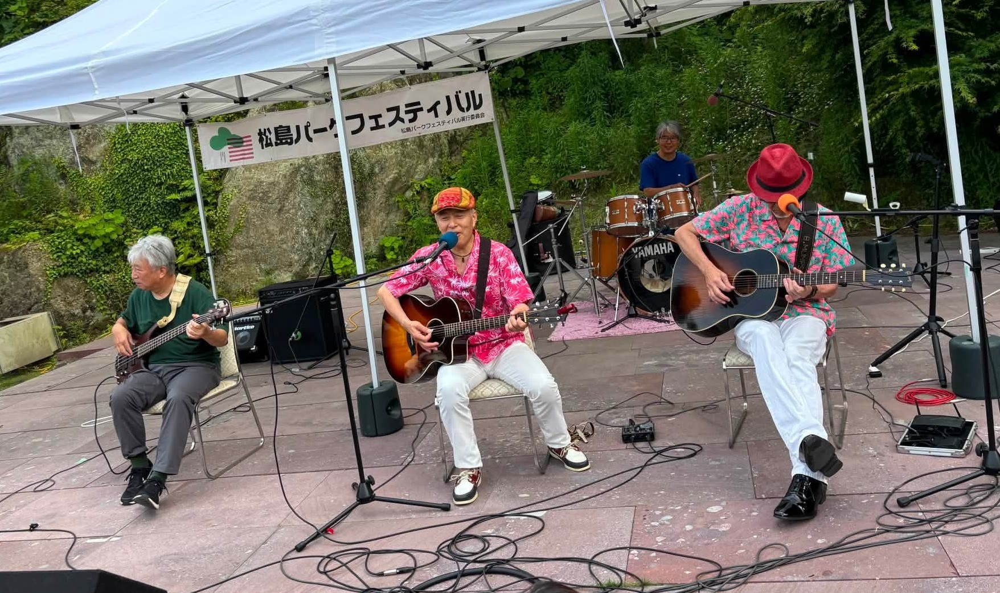
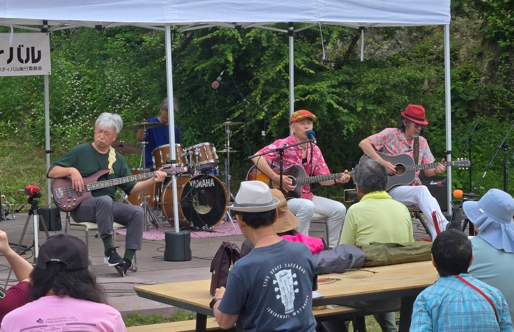
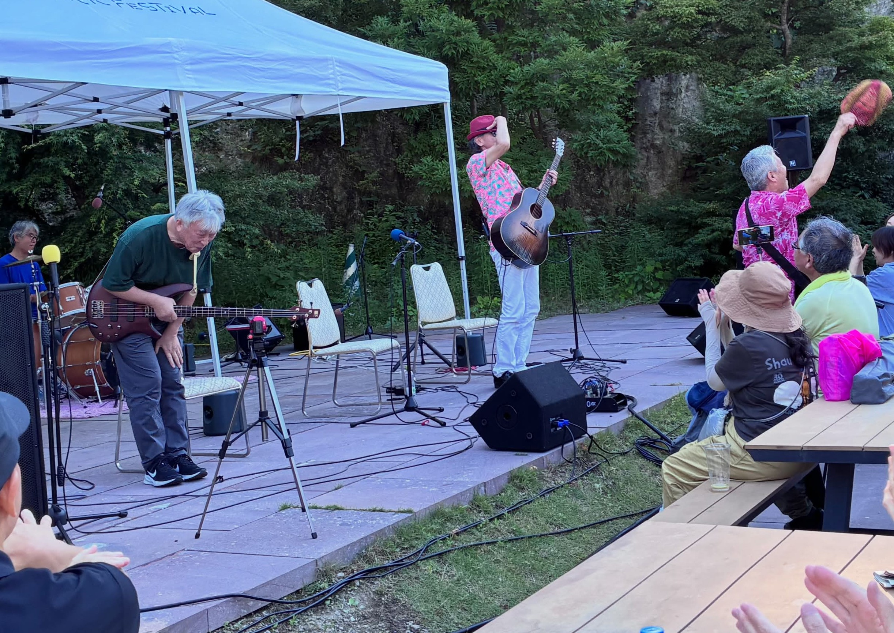
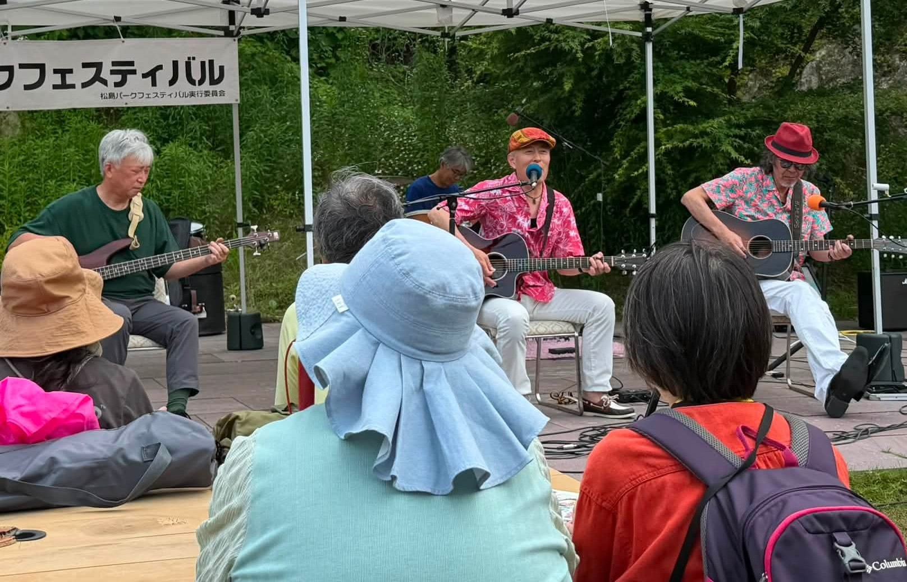

2026.06.28
松島パークフェスティバル2026
松島離宮庭園ステージ

2026年6月28日（日）松島パークフェスティバル2026の2日目
B.mumpsは15：10より松島離宮庭園ステージにて演奏いたしました
松島離宮の前には大きなステージがあり 多くの方が足を止めて演奏を聞き入っていました 音響も素晴らしく、庭園ステージの音は全く聞こえてきません
「もしかしてB.mumpsの演奏を聴きに来る方は少ないのでは？」と不安いっぱいでした
と・こ・ろ・が・・・
演奏前には観覧席の半分はすでに埋まり 演奏中には満席になるという状態
不安が吹き飛び 演奏に集中できました
1曲目が終わると同時にアンコール もちろん日本一早くアンコールにお応えしました
そしてなんと2回目のアンコール うれしい限りです
B.mumpsの応援グッズもたくさん差し上げることができました。グッズをお渡しするときに一言会話を交わせるのがいいですね 演奏してよかったと思えます これからも続けていきますので、まだ手にしていない方は次のライブでゲットしてください
暑い中わざわざ足を運んでくださった皆様ありがとうございました。


